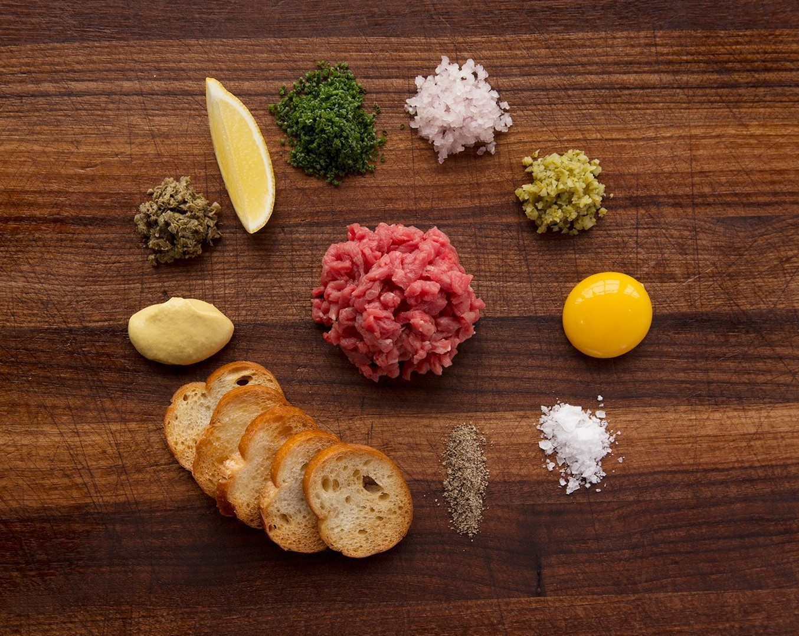

Ingredients
- 2 x 175g/6oz aged beef fillet steaks
- 2 free-range egg yolks
- 1 lemon, juice only
- 100ml/3½fl oz extra virgin olive oil
- 1 tbsp Worcestershire sauce
- 2 gherkins, very finely chopped
- salt and freshly ground black pepper
- 1 tbsp Dijon mustard
- 1 red onion, very finely chopped
- 2 salted anchovy fillets, rinsed, drained, very finely chopped
- French fries, to serve
Method
- Using a very sharp knife, slice the steak into thin slices (cut with the grain), then cut across the slices to create strips of meat.
- Turn the strips of steak and cut across again into tiny cubes. Place into a bowl.
- Meanwhile, whisk the egg yolks in a bowl. Add the lemon juice, olive oil and Worcestershire sauce and whisk well to combine.
- Add the steak pieces to the dressing along with the gherkins, mustard, red onion and salted anchovy pieces. Stir well to combine and season well with salt and freshly ground black pepper.
- To serve, place a 10cm/4in chefs' ring onto each of two plates. Spoon equal quantities of the tartare mixture into the rings and press down into the edges.
- Remove the rings and serve with French fries alongside.